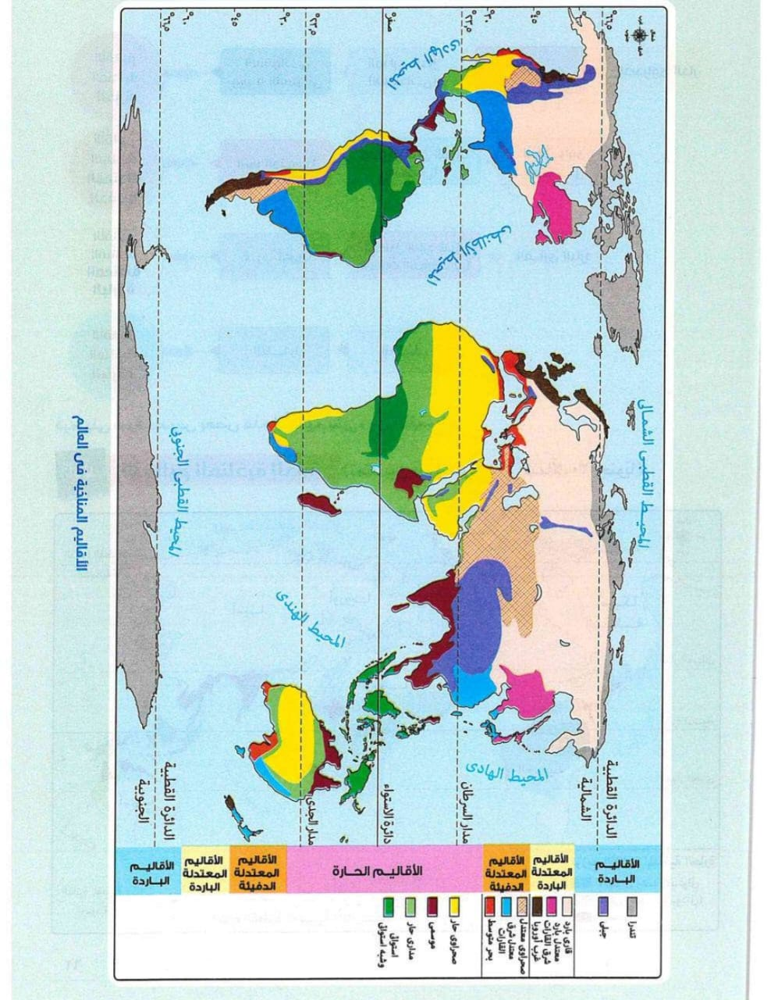

يقصد بالإقليم المناخي: منطقة محددة على سطح الأرض لها خصائص مناخية معينة من حيث الحرارة والرياح والأمطار وغيرها من عناصر المناخ.
المناطق القريبة من دائرة الاستواء (من صفر إلى 10 شمالًا وجنوبًا).
غابات استوائية كثيفة ومتشابكة من أهم أشجارها الماهوجني والمطاط، وتكثر بها الزواحف والطيور والحيوانات المتسلقة.
آسيا – أفريقيا – أمريكا الجنوبية – أستراليا.
يقع شمال وجنوب الإقليم الاستوائي (من 10 إلى 18 شمالًا وجنوبًا).
حشائش السافانا، وغابات موسمية أقل كثافة وتشابكًا من الغابات الاستوائية، من أهم أشجارها جوز الهند.
آسيا – أفريقيا – أمريكا الجنوبية – أستراليا.
في العروض المعتدلة بين دائرتي عرض (30°–45° شمالًا وجنوبًا).
غابات البحر المتوسط ومن أهم أشجارها الزيتون، وهي أشجار دائمة الخضرة. كما تنتشر حشائش الإستبس في بعض المناطق.
آسيا – أفريقيا – أوروبا – أمريكا الشمالية – أمريكا الجنوبية – أستراليا.
في العروض المعتدلة بين دائرتي عرض (30°–45° شمالًا وجنوبًا) شرق القارات.
غابات الإقليم الصيني ومن أهم أشجارها الصفصاف والبلوط، وهي أشجار دائمة الخضرة.
آسيا – أمريكا الشمالية – أمريكا الجنوبية – أستراليا.
بين دائرتي عرض (45°–60° شمالًا).
غابات نفضية ومن أهم أشجارها الزان.
أوروبا – آسيا – أمريكا الشمالية.
بين دائرتي عرض (45°–60° شمالًا).
غابات مخروطية من أهم أشجارها الصنوبر والشربين، ويعيش بها حيوانات كثيفة الفراء مثل الدب القطبي.
آسيا – أوروبا – أمريكا الشمالية.
فيما وراء الدائرتين القطبيتين (60° شمالًا وجنوبًا).
طحالب تنمو سريعًا في فصل ذوبان الجليد، ويعيش بها حيوان الرنة.
أوروبا – آسيا – أمريكا الشمالية – أمريكا الجنوبية – أنتاركتيكا.
يشغل القمم والمنحدرات العليا للمناطق الجبلية في قارات العالم.
تتنوع تبعًا لارتفاع السطح وكمية المطر، وشديدة البرودة في القمم المغطاة بالجليد.
يتنوع النبات الطبيعي حسب الارتفاع: من حشائش في السفوح إلى نباتات محدودة في القمم.